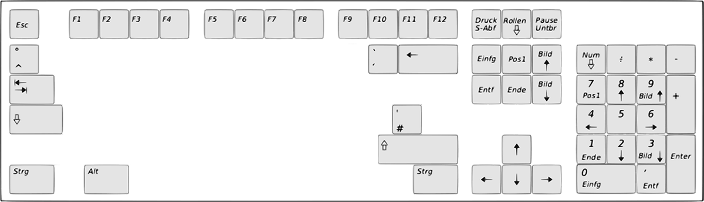

<h2>Lerne die Tastatur kennen</h2>

<div class="tastatur">
	<div *ngFor="let taste of tasten" class="taste" [attr.style]="taste.position">
		
		<div class="overImg" [id]="taste.name"></div>
	</div>
	<div class="full">
		
	</div>
</div>